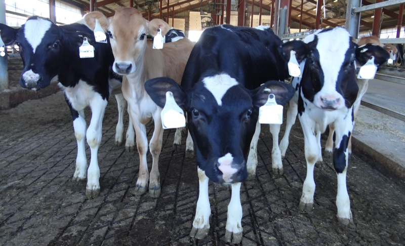
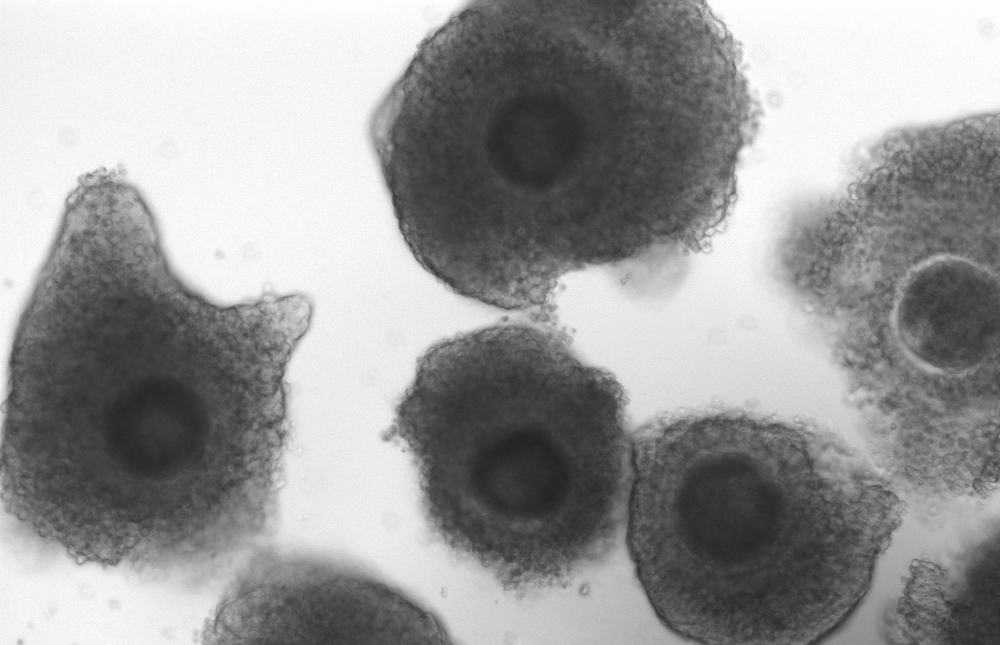
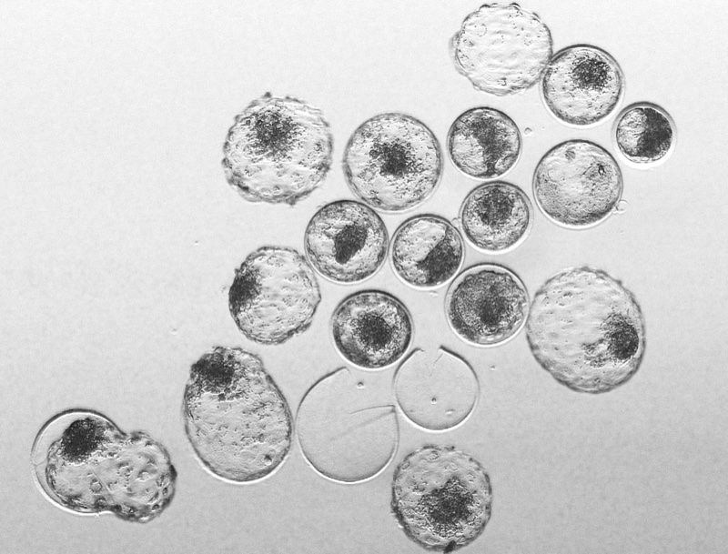
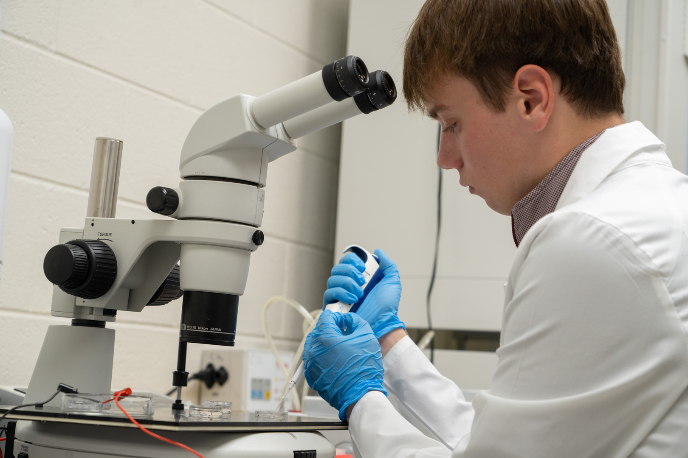

Fernando Biase
Principal Investigator
PhD in Genetics
Reproductive and Developmental Systems Genomics
Our mission is to understand the molecular mechanisms that drive fertility and the early stages of embryo development and implantation in mammals. To achieve our goals, we are strongly committed to combining experimental, and systems genomics approaches to understand the dynamics of gene regulatory and signaling networks that orchestrate successful events related to fertility or infertility. Our efforts focus on three primary thrusts: 1) Molecular profiling of heifer infertility; 2) The acquisition of developmental competence in oocytes and the molecular signals of embryo survival; 3) Molecular signaling between conceptus and endometrium.
Our research program is partially funded by:
- The United States Department of Agriculture
- Virginia Cattle Industry Board
There are several causes of infertility. In the Biase Lab, we are tackling the problem in heifers in beef and dairy cattle. Our multidisciplinary program aims at profiling blood born molecules for the comprehensive investigation of genetic and physiological alterations that contribute to infertility. Then, we employ artificial intelligence algorithms for the prediction of fertility in heifers as early as 6 months of age.


The female gamete stores massive amounts of RNAs, proteins and metabolites. The qualitative and quantitative composition of these stores define the ability of this oocyte to be fertilized and sustain the early embryo development. We are interested in understanding the regulatory venues that drive the synthesis of RNA in oocytes. Furthermore, we focus on unveiling how the accumulation of RNAs will contribute to the oocyte developmental competence.
The initial cell cycles of the mammalian organisms are an intriguing, and amazing, phase of the development. The development of a complex multicellular organism from one cell (also called zygote) is far from being understood by developmental biologists. In our lab, we are researching the gene regulatory network wiring that allows the embryo to successfully reach the blastocyst stage. First, we are interested in understanding how the embryo’s genome is activated. We are also investigating the genetics and molecular features that lead to early embryonic developmental arrest.

pict
After the formation of blastocyst, the embryos hatch from the zona pelucida and the embryonic cells are in immediate contact with the endometrial cells in the uterus. Then, a two-way molecular communication takes place so that the embryo is not rejected by the endometrium and is nourished by the uterus. This communication is essential for the successful implantation and subsequent placentation. We are interested in finding the multitude of pathways the conceptus uses to communicate with the endometrium and vice-versa.
Principal Investigator
PhD in Genetics
Reproductive and Developmental Systems Genomics
Graduate Student
PhD Student
Genetics, Bioinformatics, and Computational Biology
Graduate Student
PhD Student
Animal Sciences
Recent Graduates and Their Career Paths:
2025 - Gustavo Schettiini - PhD → Postdoctoral Researcher at Virginia Commonwealth University
2024 - Makenzie Marrella - PhD → Data Analyst at East Penn Manufacturing
2023 - Jada Nix - MS → Doctoral program at University of Missouri
2020 - Bailey Walker - MS → Embryologist and Laboratory Technician at Alabama Center for Reproductive Medicine
2019 - Sarah E Moorey - PhD → Assistant Professor at University of Tennessee
2018 - Katelyn Kimble - MS → Texas A&M College of Veterinary Medicine & Biomedical Sciences
For a complete list of publications, please visit Pubmed or Google Scholar. BioRxiv papers can be loaded using bioRxiv
2020-currentBiase FH, Moorey SE, Schnuelle JG, Rodning S, Ortega MS, Spencer TE. Altered microRNA composition in the uterine lumen fluid in cattle (Bos taurus) pregnancies initiated by artificial insemination or transfer of an in vitro produced embryo. J Anim Sci Biotechnol. 2024 Sep 13;15(1):130. doi: 10.1186/s40104-024-01083-8. Paper
Schettini GP, Morozyuk M, Biase FH. Identification of novel cattle (Bos taurus) genes and biological insights of their function in pre-implantation embryo development. BMC Genomics. 2024 Aug 9;25(1):775. doi: 10.1186/s12864-024-10685-5. Paper
Biase FH, Schettini G. Protocol for the electroporation of CRISPR-Cas for DNA and RNA targeting in Bos taurus zygotes. STAR Protoc. 2024 Mar 15;5(1):102940. doi: 10.1016/j.xpro.2024.102940. Paper
Marrella M, Moorey SED, Campagna SR, Sarumi Q, Biase FH. Higher abundance of 2-dehydro-d-gluconate in the plasma of sub-fertile or infertile Bos taurus heifers. J Anim Sci. 2024 Jan 3;102:skae126. doi: 10.1093/jas/skae126. Paper
Nix JL, Schettini GP, Speckhart SL, Ealy AD, Biase FH. Ablation of OCT4 function in cattle embryos by double electroporation of CRISPR-Cas for DNA and RNA targeting (CRISPR-DART). PNAS Nexus. 2023 Oct 20;2(11):pgad343. doi: 10.1093/pnasnexus/pgad343. Paper
Biase FH, Moorey SE, Schnuelle JG, Rodning S, Ortega MS, Spencer TE. Extensive rewiring of the gene regulatory interactions between in vitro-produced conceptuses and endometrium during attachment. PNAS Nexus. 2023 Sep 2;2(9):pgad284. doi: 10.1093/pnasnexus/pgad284.Paper
Marrella MA, Biase FH. A multi-omics analysis identifies molecular features associated with fertility in heifers (Bos taurus). Sci Rep. 2023 Aug 4;13(1):12664. doi: 10.1038/s41598-023-39858-0. Paper
Marrella MA, Biase FH. Robust identification of regulatory variants (eQTLs) using a differential expression framework developed for RNA-sequencing. J Anim Sci Biotechnol. 2023 May 5;14(1):62. doi: 10.1186/s40104-023-00861-0. Paper
Nix JL, Schettini GP, Biase FH. Sexing of cattle embryos using RNA-sequencing data or polymerase chain reaction based on a complete sequence of cattle chromosome Y. Front Genet. 2023 Apr 3;14:1038291. doi: 10.3389/fgene.2023.1038291. Paper
Nix J, Marrella MA, Oliver MA, Rhoads M, Ealy AD, Biase FH. Cleavage kinetics is a better indicator of embryonic developmental competency than brilliant cresyl blue staining of oocytes. Anim Reprod Sci. 2023 Jan;248:107174. doi:10.1016/j.anireprosci.2022.107174. Paper
Wilson C, Dias NW, Pancini S, Mercadante V, Biase FH. Delayed processing of blood samples impairs the accuracy of mRNA-based biomarkers. Sci Rep. 2022 May 17;12(1):8196. doi: 10.1038/s41598-022-12178-5. Paper
Biase FH. Isolation of high-quality total RNA and RNA sequencing of single bovine oocytes. STAR Protocols. 2021; 2(4).https://doi.org/10.1016/j.xpro.2021.100895. PDF
Moorey SE, Walker BN, Elmore MF, Elmore JB, Rodning SP, Biase FH. Rewiring of gene expression in circulating white blood cells is associated with pregnancy outcome in heifers (Bos taurus). Sci Rep. 2020 Oct 8;10(1):16786. doi: 10.1038/s41598-020-73694-w. PDF
Moorey SE, Biase FH. Beef heifer fertility: importance of management practices and technological advancements. J Anim Sci Biotechnol. 2020 Oct 1;11:97. doi: 10.1186/s40104-020-00503-9. PDF
Walker BN, Biase FH. The blueprint of RNA storages relative to oocyte developmental competence in cattle (Bos taurus). Biol Reprod. 2020 Apr 15;102(4):784-794. doi: 10.1093/biolre/ioaa015. abstract
We look forward to having new team members joining our laboratory to
work on a multidisciplinary research program that encompasses the
disciplines of Reproductive and Developmental Biology, Molecular
Genetics, Genomics and Computational Biology.
Enthusiastic and goal-oriented researchers who are interested in strengthening their training and developing skills that will help them progress in their career are encouraged to contact us. Prospective graduate students may also choose to be part of the Molecular and Cellular Biology or Genetics, Bioinformatics, and Computational Biology programs.
If you are interested in joining our research program, please send an email to fbiase @ vt.edu.
Our lab is located at 175 W Campus Dr, Blacksburg, VA 24061
We have great facilities that allow us to advance our research.
Researching
the genes that affect cell development
Virginia Tech news
highlights our work on studying early stages of embryo development using
CRISPR-Cas technology. Published on February 20, 2024

Dr. Fernando Biase and his student are conducting CRISPR-cas gene
editing research in cattle embryos to better understand factors that
affect development. Students in his lab gain hand-on research
experience.
Feb 20, 2024
Contemporary
and Emerging Issues Symposium I
from ASAS Taking Stock blog
post, Published on July 18, 2021
“Dr. Fernando Biase spoke about “Grand Challenges within Breeding and
Genetics”
Predicting
cattle infertility through machine-learning
by Max Esterhuizen,
Published on September 15, 2020
“Fernando Biase and the other researchers are working to understand
the potential gene transcripts that circulate in the animal’s
bloodstream that can potentially predict the likelihood of a pregnancy
occurring, with the goal of finding out how early these transcripts can
be identified in a calf.”
Auburn
University researcher working to improve fertility in cattle
by
Paul Hollis, Published on July 10, 2019
Copyright © 2025 Fernando Biase All rights reserved.